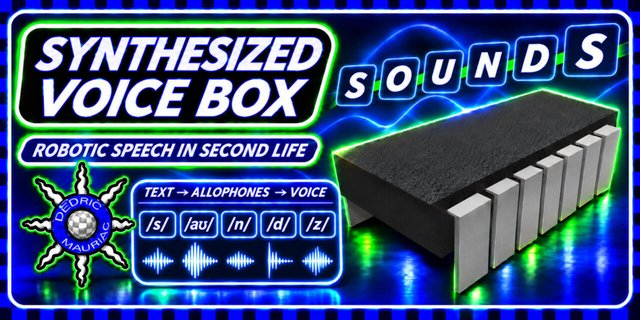

Synthesized Voice Box
Robotic speech in Second Life

Text-to-speech inside Second Life, built by stringing together just under sixty 8-bit sounds from the SPO256-AL2 speech chip.
Source Video: versions 1.0 and 1.6
Executive summary
Why it exists
Second Life had no speech. A small research project asked whether words could be built from the allophones of the General Instrument SPO256-AL2 chip, played one after another inside the platform's sound limits.
Outcome
The project was donated as open source to Second Life's third anniversary and was in the SL3B vault. Later versions produce speech that can be understood.
My role
Author.
Technical overview
How it works
A voice box object that strings just under sixty 8-bit allophone sounds together to form words and pauses. The repository holds the versions from 1.0 to 1.6, three sets of allophone recordings (including my own voice trying every sound in a monotone), and an add-on that lets the Eliza Doolittle chatbot speak.
Hard parts
With the platform's limits, the first versions did not sound fluid. As I learned ways to push Second Life further, I worked around some of those limits.